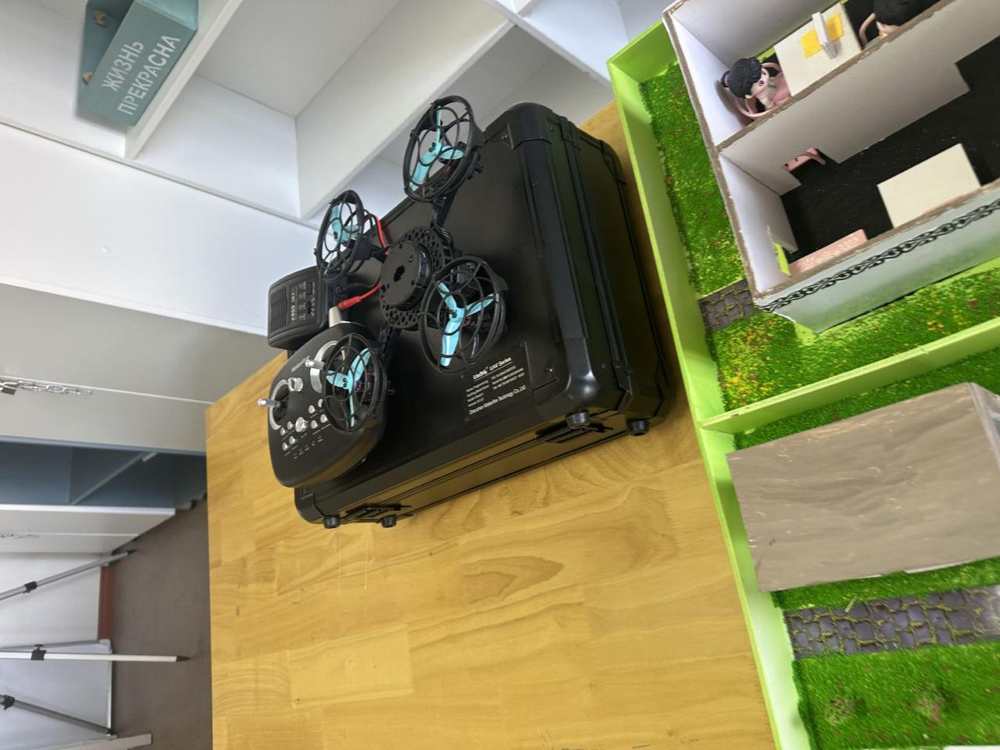
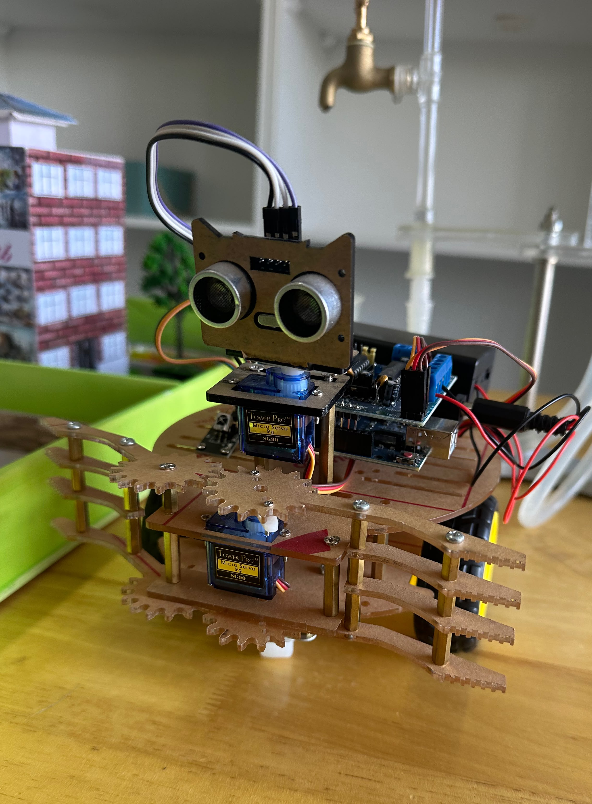
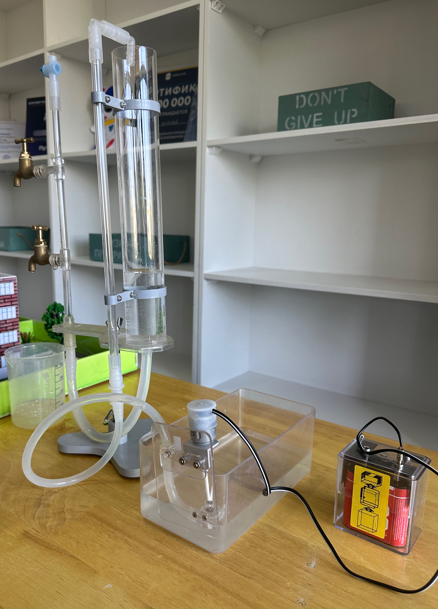

Дрон, жағалау роботы және су тазарту қондырғысынан тұратын «Smart Aqua» — Қазақстанның су ресурстарын қашықтықтан бақылап, ластану мен тапшылықтың алдын алуға арналған жұмыс істейтін прототип.
Климаттың өзгеруі, өзен ағындарының қысқаруы және су тұтынудың артуы салдарынан Қазақстанда таза ауыз су ресурстарының тапшылығы мәселесі күн санап өзектілене түсуде.
Дәстүрлі бақылау әдістері — қолмен сынама алу мен кезеңдік зертханалық талдау — уақыт пен адами ресурстарды көп талап етеді және қиын жетімді өңірлерді толық қамти алмайды.
Осыны шешу үшін біз цифрлық технологияларды — ұшқыш аппараттарды, робототехниканы және сенсорлық жүйелерді — біріктірген «Smart Aqua» кешенді мониторинг жүйесінің прототипін жасадық.
Су көздерінің экологиялық жағдайын дрон, робот және сенсорлық жүйелер негізінде үздіксіз бақылауға және деректерді цифрлық платформа арқылы жинақтауға мүмкіндік беретін жүйе құру.
Әр модуль өз алдына сынақтан өткен, ал деректер болашақта ортақ веб-платформаға жиналатын болып жобаланған.

Квадрокоптер платформасына жердің ылғалдылығы мен рельефін бағалайтын датчик және геолокация модулі орнатылған — бұл берілген аумақ бойынша ұшып өтіп, жер асты су көздерінің болжамды орналасуын анықтауға мүмкіндік береді.
Дронға бекітілген камера өзен, көл және теңіз беттерін суретке түсіріп, судың лайлануын, түсінің өзгеруін және беткі ластану белгілерін қашықтықтан тіркейді, осылайша ықтимал бактериологиялық қауіп ошақтарын алдын ала анықтайды.

Arduino негізіндегі басқару платасы, HC-SR04 ультрадыбыстық сенсоры және сервоприводтар арқылы жиналған робот су объектісінің жағалауы бойымен қозғалып, кедергілерді анықтайды.
Робот дронмен бірге кешенді жерүсті-әуе мониторинг жүйесін құрайды және қосымша бақылау деректерін жинайды.

Айналымды сорғы, гидравликалық цилиндрлер және ток көзінен тұратын қондырғы арқылы судың тазару және сақталу циклі демонстрацияланады.
Бұл модуль болашақта анықталған ластану ошақтарында алғашқы тазарту шараларын автоматты түрде жүзеге асыратын жүйенің негізі ретінде қарастырылады.
Прототипті құрастырудан бастап, жобаны танымал алаңдарда таныстыруға дейін.
Жоба цифрландыру саласының вице-министрі Дмитрий Мунға көрсетіліп, жүйенің жұмыс принципі таныстырылды.
Жобаны Президент кеңесшісі Мәлік Отарбаевқа таныстыру мүмкіндігі болды.
Осы жоба арқылы авторлар АҚШ-қа танысу сапарына жолдама жеңіп алды.
Жобаны жетілдіруге жоғары оқу орны тарапынан гранттық қолдау бөлінді, жүйе 4 ай бойы дамыту сатысынан өтуде.
Төмендегі көмекші жоба, оның модульдері және су мәселесі бойынша жиі қойылатын сұрақтарға дереу жауап береді.
Жүйе бетінде көрсетілген ақпарат негізінде жауап береді; жеке жағдайыңызды тексерту үшін төмендегі байланыс түймесін басыңыз.
Жоба тобымен тікелей байланысу үшін WhatsApp арқылы хабарласыңыз, сұрағыңызға жедел жауап береміз.
WhatsApp арқылы жазу